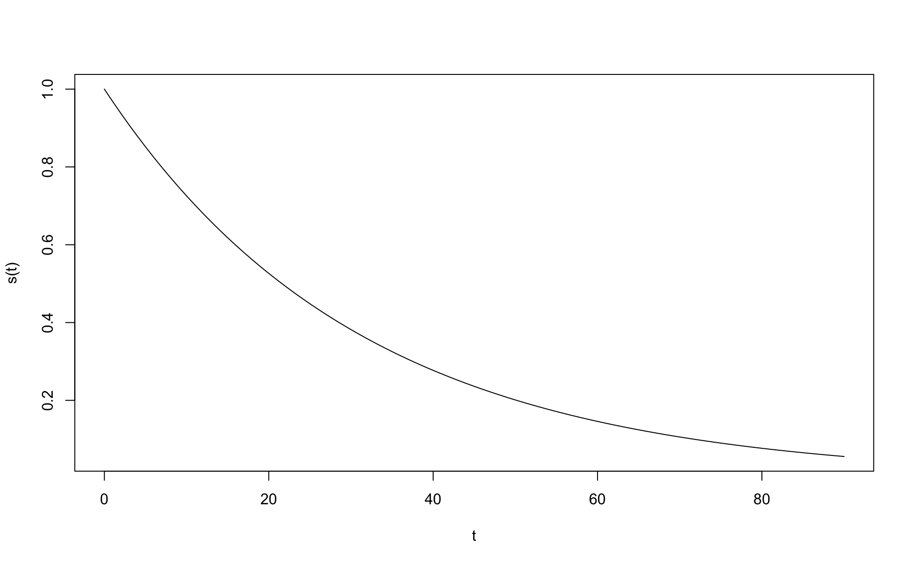
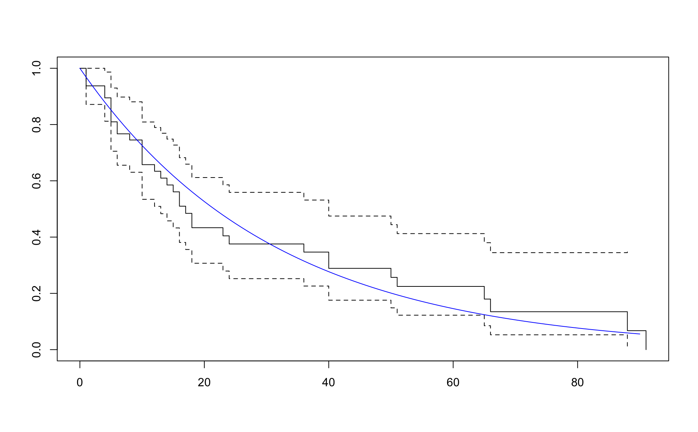
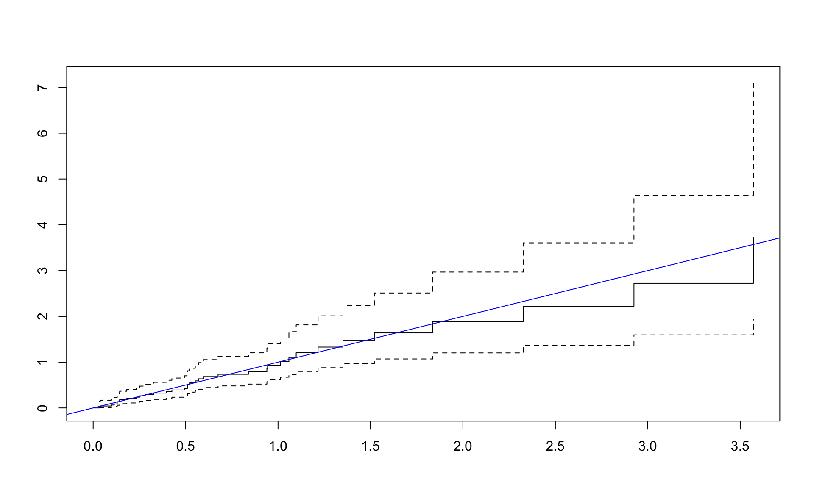
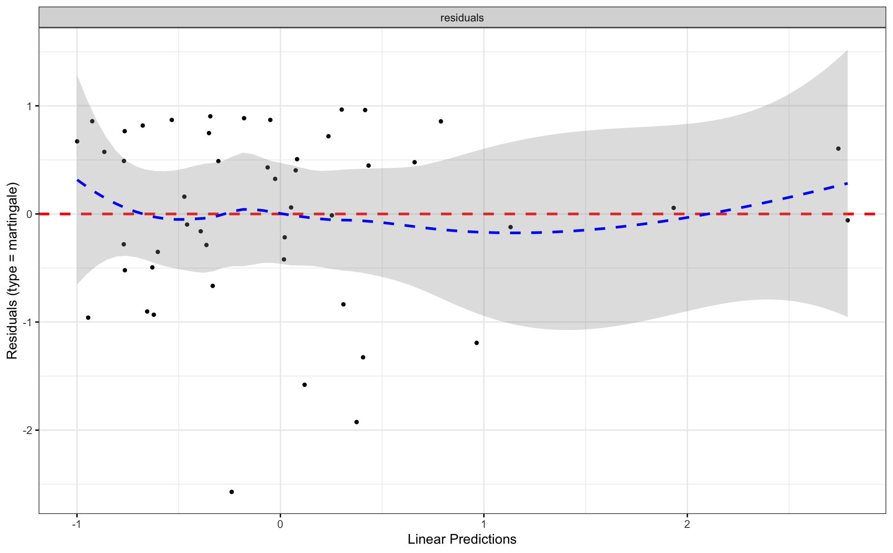

Chapter 4 Model Checking in the Cox Regression Model
library(survival)
library(tidyverse)
library(flexsurv)
library(rms)
library(skimr)
library(stdReg)
library(survminer)Survival_of_multiple_myeloma_patients <- read.table("./data/Survival of multiple myeloma patients.dat",
header=T)
d_1_3 <- Survival_of_multiple_myeloma_patients
d_1_3$sexf <- factor(d_1_3$sex)
d_1_3$proteinf <- factor(d_1_3$protein)
head(d_1_3)## patient time status age sex bun ca hb pcells protein sexf proteinf
## 1 1 13 1 66 1 25 10 14.6 18 1 1 1
## 2 2 52 0 66 1 13 11 12.0 100 0 1 0
## 3 3 6 1 53 2 15 13 11.4 33 1 2 1
## 4 4 40 1 69 1 10 10 10.2 30 1 1 1
## 5 5 10 1 65 1 20 10 13.2 66 0 1 0
## 6 6 7 0 57 2 12 8 9.9 45 0 2 04.1 Einfalt Kaplan Meier

total_time <- sum(d_1_3$time)
num_events <- sum(d_1_3$status)
lambda <- num_events / total_time
lambda## [1] 0.03208556Tími á milli atburða er 1 / lambda
## [1] 31.166674.2 Veldislifunarfallið
## [1] 0.5263909

\[ S(t) = e^{-\lambda t} \]
\[ H(t) = -\log S(t) = -\log (e^{-\lambda t}) = -(-\lambda t) = \lambda t \]
\[ H(t) = \int_0^t h(t)dt = \sum_{i=1}^n h(t)(t_{i + 1} - t_i) \]

4.3 Leifar í Cox
## patient time status age sex bun ca hb pcells protein sexf proteinf
## 1 1 13 1 66 1 25 10 14.6 18 1 1 1
## 2 2 52 0 66 1 13 11 12.0 100 0 1 0
## 3 3 6 1 53 2 15 13 11.4 33 1 2 1
## 4 4 40 1 69 1 10 10 10.2 30 1 1 1
## 5 5 10 1 65 1 20 10 13.2 66 0 1 0
## 6 6 7 0 57 2 12 8 9.9 45 0 2 0## Call:
## coxph(formula = Surv(time, status) ~ hb + bun, data = d_1_3)
##
## coef exp(coef) se(coef) z p
## hb -0.134952 0.873758 0.061956 -2.178 0.029391
## bun 0.020043 1.020245 0.005816 3.446 0.000569
##
## Likelihood ratio test=13.98 on 2 df, p=0.0009213
## n= 48, number of events= 36Cox-Snell residuals eiga að hegða sér eins og lifunargögn úr veldisdreifingu með \(\lambda = 1\).
resid_martingale <- residuals(m_4_5, type = "martingale")
d_1_3$coxsnell <- d_1_3$status - resid_martingaletotal_coxsnell <- sum(d_1_3$coxsnell)
lambda_coxsnell <- num_events / total_coxsnell
lambda_coxsnell## [1] 1
4.4 Survminer


m_null <- coxph(Surv(time, status) ~ 1, data = d_1_3)
resid_martin <- residuals(m_null, type = "martingale")
d_1_3$resid_martin <- resid_martin
ggplot(data = d_1_3, aes(bun, resid_martin)) +
geom_point() +
geom_smooth(method = "loess") +
scale_x_log10()
d_1_3 %>%
mutate(log_bun = log(bun)) %>%
gather(variable, value, log_bun, bun, hb) %>%
ggplot(aes(value, resid_martin)) +
geom_point() +
geom_smooth() +
facet_wrap("variable", scales = "free")